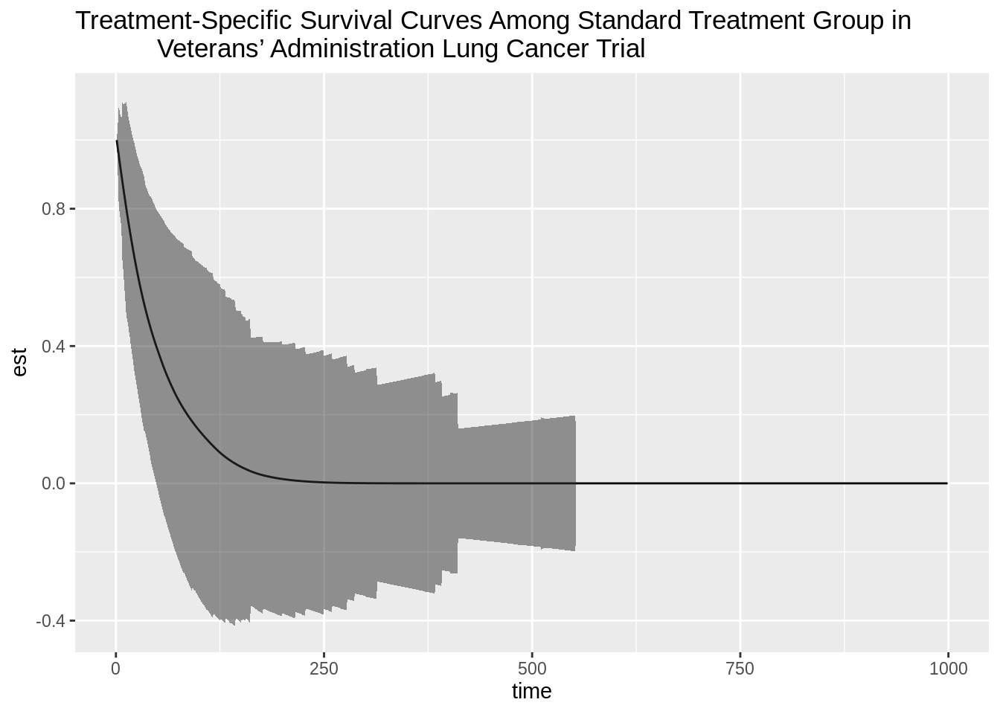
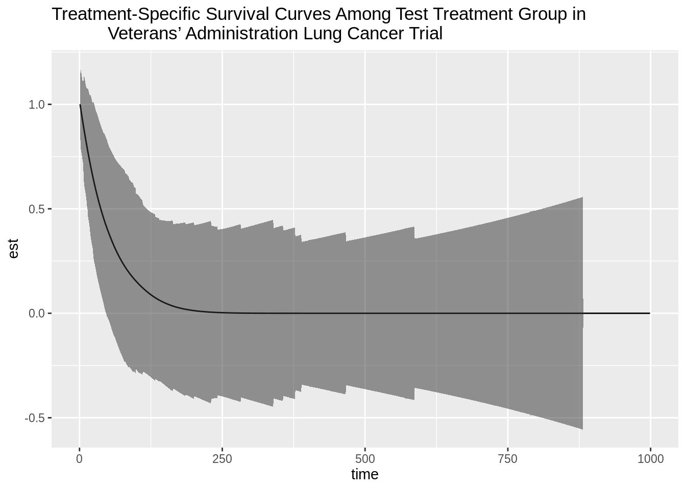

Chapter 6 One-Step TMLE for Time-to-Event Outcomes
Based on the MOSS R package
by Wilson Cai and Mark van der Laan.
Updated: 2019-12-06
6.1 Learning Objectives
- Format right-censored survival data for
MOSS. - Fit a SuperLearner initial estimate of the conditional survival function of
failure, conditional survival function of censoring and the propensity scores
(
initial_sl_fit). - Calculate the TMLE adjustment of the conditional survival fit
(
MOSS_hazard). - Formulate a simultaneous confidence band for the estimated conditional
survival across a range of time-points (
compute_simultaneous_ci).
6.2 Introduction
In this section, we explore the MOSS R package. This software performs
ensemble machine learning with the SuperLearner R
package and
One-Step Targeted Maximum Likelihood Estimation (TMLE) to estimate
counterfactual marginal survival functions and the Average Treatment Effect
(ATE) on survival probabilities, while non-parametrically adjusting for measured
confounding. This one-step TMLE can be executed via recursion in small local
updates, and creates a doubly robust and semi-parametrically efficient
estimator. Simultaneous confidence bands of the entire curve are also
available for inference.
6.2.1 Existing Methods for Observational Survival Analysis
To facilitate comparison with other estimation procedures, the following
additional estimators are also included in the MOSS R package:
- Inverse Censoring Probability Weighted (IPCW) estimator, which re-weights the observed data by the inverse of the product of the propensity score and censoring probability before applying a standard estimation method (Rotnitzky and Robins 2014).
- Estimating Equation (EE) estimator, which improves IPCW by adding the sample mean of the efficient influence curve and is a locally efficient and double robust (Hubbard, Van Der Laan, and Robins 2000).
TMLE works well to improve the statistical efficiency of EE Like EE, TMLE is also doubly robust and locally efficient. In contrast to these two methods, TMLE performs an adjustment on the estimate of the relevant part of the data-generating distribution before applying the parameter mapping and thus always respects the parameter space (probabilities falling inside [0,1]), a so-called substitution/plug-in estimator. As a result, is more robust to outliers and sparsity than non-substitution estimators.
Motivating one-step TMLE: monotonic survival curve
EE and TMLE utilize efficiency theory derived for univariate parameters, making
estimation of the survival curve a collection of univariate survival probability
estimators. This procedure can lead to a survival curve that is not
monotonically decreasing. The one-step TMLE implemented in MOSS targets the
survival curve as a whole and thus ensures monotonicity, while preserving the
desirable performance of the point-wise TMLE (Cai and Laan 2019).
6.3 Using MOSS for One-Step TMLE for Time-to-Event Outcomes
MOSS implementation consists of the following steps:
- Load the necessary libraries and data.
- Specify the right-censored survival data arguments.
- Estimate the (1) conditional survival function of failure event, (2)
conditional survival function of censoring event, and (3) propensity score
with the
SuperLearnerRpackage. - Perform TMLE adjustment of the initial conditional survival fit.
- Compute standard error estimates for simultaneous inference.
0. Load necessary libraries and data
library(MOSS)
vet_data <- read.csv("https://raw.githubusercontent.com/tlverse/deming2019-workshop/master/data/veteran.csv")
head(vet_data) X trt celltype time status karno diagtime age prior
1 1 1 squamous 72 1 60 7 69 0
2 2 1 squamous 411 1 70 5 64 10
3 3 1 squamous 228 1 60 3 38 0
4 4 1 squamous 126 1 60 9 63 10
5 5 1 squamous 118 1 70 11 65 10
6 6 1 squamous 10 1 20 5 49 0The variables in vet_data are
* trt: treatment type (1 = standard, 2 = test),
* celltype: histological type of the tumor,
* time: time to death or censoring in days,
* status: censoring status,
* karno: Karnofsky performance score that describes overall patient status at
the beginning of the study (100 = good),
* diagtime: months from diagnosis to randomization,
* age: age of patient in years, and
* prior: prior therapy (0 = no, 10 = yes).
1. Specify right-censored survival data arguments
The following variables need to be specified from the data so they can
subsequently be used as required arguments for MOSS functions:
W: dataframe of baseline covariates \(W\).A: binary treatment vector \(A\).T_tilde: time-to-event vector \(\tilde{T} = \min(T, C)\).Delta: censoring indicator vector \(\Delta = I(T \leq C)\).t_max: the maximum time to estimate the survival probabilities.
We can specify these variables with our observed vet_data.
2. Obtain initial estimates with SuperLearner R package
We will use the initial_sl_fit() function to specify the data (as we
defined it above) and the SuperLearner library for initial estimation of each
of the following components of the likelihood:
- conditional survival function of failure event given treatment and confounders,
- conditional survival function for censoring event given treatment and confounders, and
- propensity score of treatment given confounders.
We are forgetting one component of the likelihood that requires estimation: the
joint distribution of confounders! In MOSS this estimation is done for us
under the hood, and we do not use the SuperLearner. Do you recall why we do
not use the SuperLearner to estimate the joint distribution of confounders
nonparametrically?
The conditional survival functions are estimated by first estimating the
conditional hazard, and then transforming into the conditional survival
function. For a thorough explanation of these procedure see Section 3 from
(Cai and Laan 2019). Currently, MOSS requires the user to do this one-to-one
tranformation from the conditional hazard to the conditional survival
probabilities by calling the hazard_to_survival() method. We will address
this later on.
Back to initial_sl_fit() – we have the option to specify the following
arguments in addition to the required data arguments.
sl_failure: SuperLearner library for failure event hazard, default = c(“SL.glm”)sl_censoring: SuperLearner library for censoring event hazard, default = c(“SL.glm”)sl_treatment: SuperLearner library for propensity score, default = c(“SL.glm”)gtol: treshold for truncating propensity scores, default = 0.001)
It is highly recommended that you specify a more complex library than the
default. The SuperLearner library arguments take a vector of strings
corresponding to learners available in the SuperLearner R package:
https://github.com/ecpolley/SuperLearner/tree/master/R.
We do not review the SuperLearner R package in these workshops, but a handy
tutorial crafted a few years ago by our colleague Chris Kennedy is freely
available: Guide to
SuperLearner.
# recall treatment was randomized
SL.ranger.faster = function(...) {
SL.ranger(..., num.trees = 50)
}
sl_lib_decent <- c("SL.mean", "SL.glm", "SL.step.forward", "SL.bayesglm",
"SL.ranger.faster", "SL.gam")
initial_fit <- initial_sl_fit(T_tilde, Delta, A, W, t_max,
sl_censoring = sl_lib_decent,
sl_failure = sl_lib_decent)
names(initial_fit)[1] "density_failure_1" "density_failure_0" "density_censor_1"
[4] "density_censor_0" "g1W" The initial_fit object contains the fitted conditional densities for the
failure events (density_failure_1 for test treatment group,
density_failure_0 for standard treatment group), censoring events
(density_censor_1 and density_censor_0 for test treatment and standard
treatment groups, respectively), and propensity scores (a vector g1W).
The density_failure_1 and density_failure_0 both need to go through the
hazard_to_survival method which populates the survival attribute of the
object.
<survival_curve>
Public:
ci: function (A, T_tilde, Delta, density_failure, density_censor,
clone: function (deep = FALSE)
create_ggplot_df: function (W = NULL)
display: function (type, W = NULL)
hazard: 0.0105086868901744 0.00890512674560573 0.010332023348463 ...
hazard_to_pdf: function ()
hazard_to_survival: function ()
initialize: function (t, hazard = NULL, survival = NULL, pdf = NULL)
n: function ()
pdf: NULL
pdf_to_hazard: function ()
pdf_to_survival: function ()
survival: 1 1 1 1 1 1 1 1 1 1 1 1 1 1 1 1 1 1 1 1 1 1 1 1 1 1 1 1 ...
survival_to_hazard: function ()
survival_to_pdf: function ()
t: 1 2 3 4 5 6 7 8 9 10 11 12 13 14 15 16 17 18 19 20 21 22 ...<survival_curve>
Public:
ci: function (A, T_tilde, Delta, density_failure, density_censor,
clone: function (deep = FALSE)
create_ggplot_df: function (W = NULL)
display: function (type, W = NULL)
hazard: 0.0105086868901744 0.00890512674560573 0.010332023348463 ...
hazard_to_pdf: function ()
hazard_to_survival: function ()
initialize: function (t, hazard = NULL, survival = NULL, pdf = NULL)
n: function ()
pdf: NULL
pdf_to_hazard: function ()
pdf_to_survival: function ()
survival: 1 1 1 1 1 1 1 1 1 1 1 1 1 1 1 1 1 1 1 1 1 1 1 1 1 1 1 1 ...
survival_to_hazard: function ()
survival_to_pdf: function ()
t: 1 2 3 4 5 6 7 8 9 10 11 12 13 14 15 16 17 18 19 20 21 22 ...3. Perform TMLE adjustment of the initial conditional survival estimate
The one-step TMLE is carried out by many local least favorable submodels (LLFMs) (performed via logistic regressions) with small step sizes. The one-step TMLE updates in small steps locally along LLFM, ensuring that the direction of the update is optimal around the current probability density. This procedure permits updates to the conditional hazard for all points on the survival curve (or any high-dimensional parameter in general), so that the conditional hazard can be transformed into a monotone survival curve after the algorithm.
At this point we are nearly ready to update the hazard using this constrained step size update. The only additional argument we need to define is
k_grid: the vector of interested time points for estimation of the conditional survival probability.
k_grid <- 1:max(T_tilde)
initial_fit$density_failure_1$t <- k_grid
initial_fit$density_failure_0$t <- k_gridWe perform the TMLE adjustment of the initial conditional survival estimate by
first creating a MOSS_hazard or MOSS_hazard_ate object and then calling
the iterate_onestep() method for this object. MOSS_hazard and
MOSS_hazard_ate correspond to different estimators:
MOSS_hazard: one-step TMLE of the treatment-specific survival curve, andMOSS_hazard_ate: one-step TMLE of ATE on survival probabilities
One-step TMLE of the Treatment-Specific Survival
# estimate survival curve for standard treatment group
hazard_fit_standardA <- MOSS_hazard$new(
A,
T_tilde,
Delta,
density_failure = initial_fit$density_failure_0,
density_censor = initial_fit$density_censor_0,
g1W = initial_fit$g1W,
A_intervene = 1,
k_grid
)
psi_standardA <- hazard_fit_standardA$iterate_onestep()# estimate survival curve for test treatment group
hazard_fit_testA <- MOSS_hazard$new(
A,
T_tilde,
Delta,
density_failure = initial_fit$density_failure_1,
density_censor = initial_fit$density_censor_1,
g1W = initial_fit$g1W,
A_intervene = 2,
k_grid
)
psi_testA <- hazard_fit_testA$iterate_onestep()One-step TMLE of ATE on Survival
hazard_fit_ate <- MOSS_hazard_ate$new(
A,
T_tilde,
Delta,
density_failure = initial_fit$density_failure_1,
density_censor = initial_fit$density_censor_1,
density_failure_0 = initial_fit$density_failure_0,
density_censor_0 = initial_fit$density_censor_0,
initial_fit$g1W
)
psi_ate <- hazard_fit_ate$iterate_onestep()
summary(psi_ate) Min. 1st Qu. Median Mean 3rd Qu. Max.
0 0 0 0 0 0 4. Compute standard error estimates for simultaneous inference
After creating a vector of survival curve estimates by defining a new
survival_curve object, we will estimate the efficient influence curve
using the TML-estimates generated in the previous step and then generate a
simultaneous confidence band for the TML-estimates.
A simultaneous confidence interval achieves the desired coverage across many points, unlike the traditional confidence interval which achieves the desired coverage for one point. Thus, the standard error for simultaneous inference is larger when demanding simultaneous coverage of the truth, and it directly follows that simultaneous confidence intervals are wider. Simultaneous inference is a multiple testing procedure which controls the family-wise error rate.
A 95% simultaneous confidence band for the TML-estimates is constructed in the following manner:
- Retain the TML-estimates of the probability of surviving up to or past each
time specified in
k_gridthat we generated in the previous step. - Compute the influence curve matrix for all times specified in
k_gridusing these TMLEs, where each column is an a time ink_gridand each row corresponds to a subject. - Calculate the correlation of the IC matrix.
- Randomly draw many values from a multivariate Normal(0,Sigma) distribution
(e.g.
z <- rmvnorm(1e6, mean = rep(0, length(k_grid)), sigma = cor(IC_matrix))), where sigma corresponds to what was generated in step 3. - Identify the row-wise maximum of the absolute value of each MVN value (e.g.
z_abs <- apply(z, 1, function(x) max(abs(x)))). - Using these maximum absolute values, calculate the 95th quantile of
z_abs, which is the standard error to use for simultaneous inference (e.g.z_95 <- quantile(z_abs, .95)) - Calculate the time-specific standard deviation of the influence functions
(e.g.
sd_IC_time1 <- sd(IC_matrix[,1])*sqrt(n-1)/n) - Calculate the time-specific simultaneous confidence intervals (e.g.
lower_bound_time1 <- est_time1 - z_95*sd_IC_time1)
The simultaneous inference for the TML-estimates are constructed based on
asymptotic linearity of the TMLE uniform in all points considered. Step 4
approximates the Guassian process, and step 5 calculates the supremum norm of
this process. The 0.95 quantile of the supremum norm of the Guassian process
calculated in step 6 (i.e. z_95) will converge as the sample size increases
and as the values drawn from the MVN (i.e. 1e6 used in step 4) increase.
See the manuscript accompanying the MOSS package for more details and
references on constructing simultaneous inference (Cai and Laan 2019).
# estimate and obtain inference for survival curve for standard treatment group
survival_standardA <- survival_curve$new(t = k_grid, survival = psi_standardA)
survival_curve_standardA <- as.vector(survival_standardA$survival)
eic_standardA <- eic$new(
A = A,
T_tilde = T_tilde,
Delta = Delta,
density_failure = hazard_fit_standardA$density_failure,
density_censor = hazard_fit_standardA$density_censor,
g1W = hazard_fit_standardA$g1W,
psi = survival_curve_standardA,
A_intervene = hazard_fit_standardA$A_intervene
)
eic_matrix_standardA <- eic_standardA$all_t(k_grid = k_grid)
std_err_standardA <- compute_simultaneous_ci(eic_matrix_standardA)
upper_bound_standardA <- survival_curve_standardA + (1.96*std_err_standardA)
lower_bound_standardA <- survival_curve_standardA - (1.96*std_err_standardA)
plotdf_standardA <- data.frame(time = k_grid, est = survival_curve_standardA,
upper = upper_bound_standardA,
lower = lower_bound_standardA,
type = rep("standard", length(k_grid)))
plot_standardA <- ggplot(data = plotdf_standardA, aes(x = time, y = est)) +
geom_line() +
geom_ribbon(data = plotdf_standardA, aes(ymin = lower, ymax = upper),
alpha = 0.5) +
ggtitle("Treatment-Specific Survival Curves Among Standard Treatment Group in
Veterans’ Administration Lung Cancer Trial")
plot_standardA
# estimate and obtain inference for survival curve for test treatment group
survival_testA <- survival_curve$new(t = k_grid, survival = psi_testA)
survival_curve_testA <- as.vector(survival_testA$survival)
eic_testA <- eic$new(
A = A,
T_tilde = T_tilde,
Delta = Delta,
density_failure = hazard_fit_testA$density_failure,
density_censor = hazard_fit_testA$density_censor,
g1W = hazard_fit_testA$g1W,
psi = survival_curve_testA,
A_intervene = hazard_fit_testA$A_intervene
)
eic_matrix_testA <- eic_testA$all_t(k_grid = k_grid)
std_err_testA <- compute_simultaneous_ci(eic_matrix_testA)
upper_bound_testA <- survival_curve_testA + (1.96*std_err_testA)
lower_bound_testA <- survival_curve_testA - (1.96*std_err_testA)
plotdf_testA <- data.frame(time = k_grid, est = survival_curve_testA,
upper = upper_bound_testA, lower = lower_bound_testA,
type = rep("test", length(k_grid)))
plot_testA <- ggplot(data = plotdf_testA, aes(x = time, y = est)) +
geom_line() +
geom_ribbon(data = plotdf_testA, aes(ymin = lower, ymax = upper), alpha = 0.5) +
ggtitle("Treatment-Specific Survival Curves Among Test Treatment Group in
Veterans’ Administration Lung Cancer Trial")
plot_testA
counseling# Optimal Individualized Treatment Regimes
Based on the tmle3mopttx R package
by Ivana Malenica, Jeremy Coyle, and Mark van der Laan.
Updated: 2019-12-06
6.4 Learning Objectives
By the end of this lesson you will be able to:
- Differentiate dynamic and optimal dynamic treatment interventions from static interventions.
- Explain the benefits and challenges associated with using optimal individualized treatment regimes in practice.
- Contrast the impact of implementing an optimal individualized treatment regime in the population with the impact of implementing static and dynamic treatment regimes in the population.
- Estimate causal effects under optimal individualized treatment regimes with
the
tmle3mopttxRpackage. - Implement optimal individualized treatment rules based on sub-optimal rules, or “simple” rules, and recognize the practical benefit of these rules.
- Construct “realistic” optimal individualized treatment regimes that respect real data and subject-matter knowledge limitations on interventions by only considering interventions that are supported by the data.
- Measure variable importance as defined in terms of optimal individualized treatment interventions.
6.5 Introduction to Optimal Individualized Interventions
Identifying which intervention will be effective for which patient based on lifestyle, genetic and environmental factors is a common goal in precision medicine. One opts to administer the intervention to individuals who will profit from it, instead of assigning treatment on a population level.
- This aim motivates a different type of intervention, as opposed to the static exposures we might be used to.
- In this chapter, we learn about dynamic (individualized) interventions that tailor the treatment decision based on the collected covariates.
- In the statistics community, such a treatment strategy is termed individualized treatment regimes (ITR), and the (counterfactual) population mean outcome under an ITR is the value of the ITR.
- Even more, suppose one wishes to maximize the population mean of an outcome, where for each individual we have access to some set of measured covariates. An ITR with the maximal value is referred to as an optimal ITR or the optimal individualized treatment. Consequently, the value of an optimal ITR is termed the optimal value, or the mean under the optimal individualized treatment.
- One opts to administer the intervention to individuals who will profit from it, instead of assigning treatment on a population level. But how do we know which intervention works for which patient?
- For example, one might seek to improve retention in HIV care. In a randomized clinical trial, several interventions show efficacy- including appointment reminders through text messages, small cash incentives for on time clinic visits, and peer health workers.
- Ideally, we want to improve effectiveness by assigning each patient the intervention they are most likely to benefit from, as well as improve efficiency by not allocating resources to individuals that do not need them, or would.

Figure 6.1: Illustration of a Dynamic Treatment Regime in a Clinical Setting
This aim motivates a different type of intervention, as opposed to the static exposures we might be used to.
- In this chapter, we examine multiple examples of optimal individualized treatment regimes and estimate the mean outcome under the ITR where the candidate rules are restricted to depend only on user-supplied subset of the baseline covariates.
- In order to accomplish this, we present the
tmle3mopttxRpackage, which features an implementation of a recently developed algorithm for computing targeted minimum loss-based estimates of a causal effect based on optimal ITR for categorical treatment. - In particular, we will use
tmle3mopttxto estimate optimal ITR and the corresponding population value, construct realistic optimal ITRs, and perform variable importance in terms of the mean under the optimal individualized treatment.
6.5.1 Data Structure and Notation
- Suppose we observe \(n\) independent and identically distributed observations of the form \(O=(W,A,Y) \sim P_0\). \(P_0 \in \mathcal{M}\), where \(\mathcal{M}\) is the fully nonparametric model.
- Denote \(A \in \mathcal{A}\) as categorical treatment, where \(\mathcal{A} \equiv \{a_1, \cdots, a_{n_A} \}\) and \(n_A = |\mathcal{A}|\), with \(n_A\) denoting the number of categories.
- Denote \(Y\) as the final outcome, and \(W\) a vector-valued collection of baseline covariates.
- The likelihood of the data admits a factorization, implied by the time ordering of \(O\). \[\begin{equation*}\label{eqn:likelihood_factorization} p_0(O) = p_{Y,0}(Y|A,W) p_{A,0}(A|W) p_{W,0}(W) = q_{Y,0}(Y|A,W) q_{A,0}(A|W) q_{W,0}(W), \end{equation*}\]
- Consequently, we define \(P_{Y,0}(Y|A,W)=Q_{Y,0}(Y|A,W)\), \(P_{A,0}(A|W)=g_0(A|W)\) and \(P_{W,0}(W)=Q_{W,0}(W)\) as the corresponding conditional distributions of \(Y\), \(A\) and \(W\).
- We also define \(\bar{Q}_{Y,0}(A,W) \equiv E_0[Y|A,W]\).
- Finally, denote \(V\) as \(V \in W\), defining a subset of the baseline covariates the optimal individualized rule depends on.
6.5.2 Defining the Causal Effect of an Optimal Individualized Intervention
- Consider dynamic treatment rules \(V \rightarrow d(V) \in \{a_1, \cdots, a_{n_A} \} \times \{1\}\), for assigning treatment \(A\) based on \(V \in W\).
- Dynamic treatment regime may be viewed as an intervention in which \(A\) is set equal to a value based on a hypothetical regime \(d(V)\), and \(Y_{d(V)}\) is the corresponding counterfactual outcome under \(d(V)\).
The goal of any causal analysis motivated by an optimal individualized intervention is to estimate a parameter defined as the counterfactual mean of the outcome with respect to the modified intervention distribution.
- Recall causal assumptions:
- Consistency: \(Y^{d(v_i)}_i = Y_i\) in the event \(A_i = d(v_i)\), for \(i = 1, \ldots, n\).
- Stable unit value treatment assumption (SUTVA): \(Y^{d(v_i)}_i\) does not depend on \(d(v_j)\) for \(i = 1, \ldots, n\) and \(j \neq i\), or lack of interference.
- Strong ignorability: \(A \perp \!\!\! \perp Y^{d(v)} \mid W\), for all \(a \in \mathcal{A}\).
- Positivity (or overlap): \(P_0(\min_{a \in \mathcal{A}} g_0(a|W) > 0)=1\).
- Here, we also assume non-exceptional law is in effect.
- We are primarily interested in the value of an individualized rule, \[E_0[Y_{d(V)}] = E_{0,W}[\bar{Q}_{Y,0}(A=d(V),W)].\]
- The optimal rule is the rule with the maximal value: \[d_{opt}(V) \equiv \text{argmax}_{d(V) \in \mathcal{D}} E_0[Y_{d(V)}]\] where \(\mathcal{D}\) represents the set of possible rules, \(d\), implied by \(V\).
- The target causal estimand of our analysis is: \[\psi_0 := E_0[Y_{d_{opt}(V)}] = E_{0,W}[\bar{Q}_{Y,0}(A=d_{opt}(V),W)].\]
- General, high-level idea:
- Learn the optimal ITR using the Super Learner.
- Estimate its value with the cross-validated Targeted Minimum Loss-based Estimator (CV-TMLE).
6.5.3 Why CV-TMLE?
- CV-TMLE is necessary as the non-cross-validated TMLE is biased upward for the mean outcome under the rule, and therefore overly optimistic.
- More generally however, using CV-TMLE allows us more freedom in estimation and therefore greater data adaptivity, without sacrificing inference!
6.6 Optimal ITR with a Binary Treatment
- How do we estimate the optimal individualized treatment regime? In the case of a binary treatment, a key quantity for optimal ITR is the blip function.
- Optimal ITR ideally assigns treatment to individuals falling in strata in which the stratum specific average treatment effect, the blip function, is positive and does not assign treatment to individuals for which this quantity is negative.
- We define the blip function as: \[\bar{Q}_0(V)\equiv E_0[Y_1-Y_0|V]\equiv E_0[\bar{Q}_{Y,0}(1,W) - \bar{Q}_{Y,0}(0,W)|V],\] or the average treatment effect within a stratum of \(V\).
- Optimal individualized rule can now be derived as \(d_{opt}(V) = I(\bar{Q}_{0}(V) > 0)\).
- Relying on the Targeted Maximum Likelihood (TML) estimator and the Super
Learner estimate of the blip function, we follow the below steps in order to
obtain value of the ITR:
- Estimate \(\bar{Q}_{Y,0}(A,W)\) and \(g_0(A|W)\) using
sl3. We denote such estimates as \(\bar{Q}_{Y,n}(A,W)\) and \(g_n(A|W)\). - Apply the doubly robust Augmented-Inverse Probability Weighted (A-IPW) transform to our outcome, where we define:
- Estimate \(\bar{Q}_{Y,0}(A,W)\) and \(g_0(A|W)\) using
\[D_{\bar{Q}_Y,g,a}(O) \equiv \frac{I(A=a)}{g(A|W)} (Y-\bar{Q}_Y(A,W)) + \bar{Q}_Y(A=a,W)\]
Note that under the randomization and positivity assumptions we have that \(E[D_{\bar{Q}_Y,g,a}(O) | V] = E[Y_a |V].\) We emphasize the double robust nature of the A-IPW transform: consistency of \(E[Y_a |V]\) will depend on correct estimation of either \(\bar{Q}_{Y,0}(A,W)\) or \(g_0(A|W)\). As such, in a randomized trial, we are guaranteed a consistent estimate of \(E[Y_a |V]\) even if we get \(\bar{Q}_{Y,0}(A,W)\) wrong!
Using this transform, we can define the following contrast:
\[D_{\bar{Q}_Y,g}(O) = D_{\bar{Q}_Y,g,a=1}(O) - D_{\bar{Q}_Y,g,a=0}(O)\]
We estimate the blip function, \(\bar{Q}_{0,a}(V)\), by regressing
\(D_{\bar{Q}_Y,g}(O)\) on \(V\) using the specified sl3 library of learners and
an appropriate loss function.
Our estimated rule is \(d(V) = \text{argmax}_{a \in \mathcal{A}} \bar{Q}_{0,a}(V)\).
We obtain inference for the mean outcome under the estimated optimal rule using CV-TMLE.
6.6.1 Evaluating the Causal Effect of an Optimal ITR with a Binary Treatment
To start, let us load the packages we will use and set a seed for simulation:
library(here)
library(data.table)
library(sl3)
library(tmle3)
library(tmle3mopttx)
library(devtools)
set.seed(111)6.6.1.1 Data Simulation
Our data generating distribution is of the following form:
\[W \sim \mathcal{N}(\bf{0},I_{3 \times 3})\] \[P(A=1|W) = \frac{1}{1+\exp^{(-0.8*W_1)}}\] \[P(Y=1|A,W) = 0.5\text{logit}^{-1}[-5I(A=1)(W_1-0.5)+5I(A=0)(W_1-0.5)] + 0.5\text{logit}^{-1}(W_2W_3)\]
The above composes our observed data structure \(O = (W, A, Y)\).
Note that the mean under the true optimal rule is \(\psi=0.578\) for this data-generating distribution.
Next, we specify the role that each variable in the data set plays as the nodes in a DAG.
# organize data and nodes for tmle3
data <- data_bin
node_list <- list(
W = c("W1", "W2", "W3"),
A = "A",
Y = "Y"
)- We now have an observed data structure (
data), and a specification of the role that each variable in the data set plays as the nodes in a DAG.
6.6.1.2 Constructing Optimal Stacked Regressions with sl3
- We generate three different ensemble learners that must be fit, corresponding to the learners for the outcome regression, propensity score, and the blip function.
# Define sl3 library and metalearners:
lrn_xgboost_50 <- Lrnr_xgboost$new(nrounds = 50)
lrn_xgboost_100 <- Lrnr_xgboost$new(nrounds = 100)
lrn_xgboost_500 <- Lrnr_xgboost$new(nrounds = 500)
lrn_mean <- Lrnr_mean$new()
lrn_glm <- Lrnr_glm_fast$new()
## Define the Q learner:
Q_learner <- Lrnr_sl$new(
learners = list(
lrn_xgboost_50, lrn_xgboost_100,
lrn_xgboost_500, lrn_mean, lrn_glm
),
metalearner = Lrnr_nnls$new()
)
## Define the g learner:
g_learner <- Lrnr_sl$new(
learners = list(lrn_xgboost_100, lrn_glm),
metalearner = Lrnr_nnls$new()
)
## Define the B learner:
b_learner <- Lrnr_sl$new(
learners = list(
lrn_xgboost_50, lrn_xgboost_100,
lrn_xgboost_500, lrn_mean, lrn_glm
),
metalearner = Lrnr_nnls$new()
)We make the above explicit with respect to standard notation by bundling the ensemble learners into a list object below:
6.6.1.3 Targeted Estimation of the Mean under the Optimal ITR Effect
- To start, we will initialize a specification for the TMLE of our parameter of
interest simply by calling
tmle3_mopttx_blip_revere. - We specify the argument
V = c("W1", "W2", "W3")when initializing thetmle3_Specobject in order to communicate that we’re interested in learning a rule dependent onVcovariates. - We also need to specify the type of blip we will use in this estimation problem, and the list of learners used to estimate relevant parts of the likelihood and the blip function.
- In addition, we need to specify whether we want to maximize or minimize the
mean outcome under the rule (
maximize=TRUE). - If
complex=FALSE,tmle3mopttxwill consider all the possible rules under a smaller set of covariates including the static rules, and optimize the mean outcome over all the suboptimal rules dependent on \(V\). - If
realistic=TRUE, only treatments supported by the data will be considered, therefore alleviating concerns regarding practical positivity issues.
# initialize a tmle specification
tmle_spec <- tmle3_mopttx_blip_revere(
V = c("W1", "W2", "W3"), type = "blip1",
learners = learner_list,
maximize = TRUE, complex = TRUE,
realistic = FALSE
)A tmle3_Fit that took 1 step(s)
type param init_est tmle_est se lower upper
1: TSM E[Y_{A=NULL}] 0.4289592 0.5701264 0.02749039 0.5162462 0.6240065
psi_transformed lower_transformed upper_transformed
1: 0.5701264 0.5162462 0.6240065We can see that the confidence interval covers our true mean under the true optimal individualized treatment!
6.7 Optimal ITR with a Categorical Treatment
QUESTION: Can we still use the blip function if the treatment is categorical?
- In this section, we consider how to evaluate the mean outcome under the optimal individualized treatment when \(A\) has more than two categories!
- We define pseudo-blips as vector valued entities where the output for a given \(V\) is a vector of length equal to the number of treatment categories, \(n_A\). As such, we define it as: \[\bar{Q}_0^{pblip}(V) = \{\bar{Q}_{0,a}^{pblip}(V): a \in \mathcal{A} \}\]
- We implement three different pseudo-blips in
tmle3mopttx.
- Blip1 corresponds to choosing a reference category of treatment, and defining the blip for all other categories relative to the specified reference: \[\bar{Q}_{0,a}^{pblip-ref}(V) \equiv E_0(Y_a-Y_0|V)\]
Blip2 approach corresponds to defining the blip relative to the average of all categories: \[\bar{Q}_{0,a}^{pblip-avg}(V) \equiv E_0(Y_a- \frac{1}{n_A} \sum_{a \in \mathcal{A}} Y_a|V)\]
Blip3 reflects an extension of Blip2, where the average is now a weighted average: \[\bar{Q}_{0,a}^{pblip-wavg}(V) \equiv E_0(Y_a- \frac{1}{n_A} \sum_{a \in \mathcal{A}} Y_{a} P(A=a|V) |V)\]
6.7.1 Evaluating the Causal Effect of an Optimal ITR with a Categorical Treatment
While the procedure is analogous to the previously described binary treatment, we now need to pay attention to the type of blip we define in the estimation stage, as well as how we construct our learners.
6.7.1.1 Data Simulation
- First, we load the simulated data. Here, our data generating distribution was of the following form:
\[W \sim \mathcal{N}(\bf{0},I_{4 \times 4})\] \[P(A|W) = \frac{1}{1+\exp^{(-(0.05*I(A=1) * W_1+0.8*I(A=2) * W_1+0.8*I(A=3) * W_1))}}\]
\[P(Y|A,W) = 0.5\text{logit}^{-1}[15I(A=1)(W_1-0.5) - 3I(A=2)(2W_1+0.5) \\ + 3I(A=3)(3W_1-0.5)] +\text{logit}^{-1}(W_2W_1)\]
- We can just load the data available as part of the package as follows:
- The above composes our observed data structure \(O = (W, A, Y)\). Note that the mean under the true optimal rule is \(\psi=0.658\), which is the quantity we aim to estimate.
6.7.1.2 Constructing Optimal Stacked Regressions with sl3
QUESTION: With categorical treatment, what is the dimension of the blip now? How would we go about estimating it?
# Initialize few of the learners:
lrn_xgboost_50 <- Lrnr_xgboost$new(nrounds = 50)
lrn_xgboost_100 <- Lrnr_xgboost$new(nrounds = 100)
lrn_xgboost_500 <- Lrnr_xgboost$new(nrounds = 500)
lrn_mean <- Lrnr_mean$new()
lrn_glm <- Lrnr_glm_fast$new()
## Define the Q learner, which is just a regular learner:
Q_learner <- Lrnr_sl$new(
learners = list(lrn_xgboost_50, lrn_xgboost_100, lrn_xgboost_500, lrn_mean, lrn_glm),
metalearner = Lrnr_nnls$new()
)
# Define the g learner, which is a multinomial learner:
# specify the appropriate loss of the multinomial learner:
mn_metalearner <- make_learner(Lrnr_solnp,
loss_function = loss_loglik_multinomial,
learner_function = metalearner_linear_multinomial
)
g_learner <- make_learner(Lrnr_sl, list(lrn_xgboost_100, lrn_xgboost_500, lrn_mean), mn_metalearner)
# Define the Blip learner, which is a multivariate learner:
learners <- list(lrn_xgboost_50, lrn_xgboost_100, lrn_xgboost_500, lrn_mean, lrn_glm)
b_learner <- create_mv_learners(learners = learners)- We generate three different ensemble learners that must be fit, corresponding to the learners for the outcome regression, propensity score, and the blip function.
- Note that we need to estimate \(g_0(A|W)\) for a categorical \(A\)- therefore we
use the multinomial Super Learner option available within the
sl3package with learners that can address multi-class classification problems. - In order to see which learners can be used to estimate \(g_0(A|W)\) in
sl3, we run the following:
[1] "Lrnr_bartMachine" "Lrnr_caret"
[3] "Lrnr_dbarts" "Lrnr_gam"
[5] "Lrnr_glmnet" "Lrnr_grf"
[7] "Lrnr_h2o_glm" "Lrnr_h2o_grid"
[9] "Lrnr_independent_binomial" "Lrnr_mean"
[11] "Lrnr_multivariate" "Lrnr_optim"
[13] "Lrnr_polspline" "Lrnr_pooled_hazards"
[15] "Lrnr_randomForest" "Lrnr_ranger"
[17] "Lrnr_rpart" "Lrnr_screener_corP"
[19] "Lrnr_screener_corRank" "Lrnr_screener_randomForest"
[21] "Lrnr_solnp" "Lrnr_svm"
[23] "Lrnr_xgboost" 6.7.1.3 Targeted Estimation of the Mean under the Optimal ITR Effects
# initialize a tmle specification
tmle_spec <- tmle3_mopttx_blip_revere(
V = c("W1", "W2", "W3", "W4"), type = "blip2",
learners = learner_list, maximize = TRUE, complex = TRUE,
realistic = FALSE
)A tmle3_Fit that took 1 step(s)
type param init_est tmle_est se lower upper
1: TSM E[Y_{A=NULL}] 0.5388064 0.6087992 0.07433631 0.4631027 0.7544957
psi_transformed lower_transformed upper_transformed
1: 0.6087992 0.4631027 0.7544957
1 2 3
440 388 172 We can see that the confidence interval covers our true mean under the true optimal individualized treatment.
NOTICE the distribution of the assigned treatment! We will need this shortly.
6.8 Extensions to Causal Effect of an OIT
- We consider two extensions to the procedure described for estimating the value of the ITR.
- The first one considers a setting where the user might be interested in a grid of possible suboptimal rules, corresponding to potentially limited knowledge of potential effect modifiers (Simpler Rules).
- The second extension concerns implementation of realistic optimal individual interventions where certain regimes might be preferred, but due to practical or global positivity restraints are not realistic to implement (Realistic Interventions).
6.8.1 Simpler Rules
- In order to not only consider the most ambitious fully \(V\)-optimal rule, we define \(S\)-optimal rules as the optimal rule that considers all possible subsets of \(V\) covariates, with card(\(S\)) \(\leq\) card(\(V\)) and \(\emptyset \in S\).
- This allows us to consider sub-optimal rules that are easier to estimate and potentially provide more realistic rules- as such, we allow for statistical inference for the counterfactual mean outcome under the sub-optimal rule.
# initialize a tmle specification
tmle_spec <- tmle3_mopttx_blip_revere(
V = c("W4", "W3", "W2", "W1"), type = "blip2",
learners = learner_list,
maximize = TRUE, complex = FALSE, realistic = FALSE
)A tmle3_Fit that took 1 step(s)
type param init_est tmle_est se lower upper
1: TSM E[Y_{A=W3,W2,W1}] 0.5443612 0.5718773 0.06647258 0.4415935 0.7021612
psi_transformed lower_transformed upper_transformed
1: 0.5718773 0.4415935 0.7021612Even though the user specified all baseline covariates as the basis for rule estimation, a simpler rule is sufficient to maximize the mean under the optimal individualized treatment!
QUESTION: Why do you think the estimate is higher under the less complex
rule? How does the set of covariates picked by tmle3mopttx compare to the
baseline covariates the true rule depends on?
6.8.2 Realistic Optimal Individual Regimes
tmle3mopttxalso provides an option to estimate the mean under the realistic, or implementable, optimal individualized treatment.- It is often the case that assigning particular regime might have the ability to fully maximize (or minimize) the desired outcome, but due to global or practical positivity constrains, such treatment can never be implemented in real life (or is highly unlikely).
- Specifying
realistic="TRUE", we consider possibly suboptimal treatments that optimize the outcome in question while being supported by the data.
# initialize a tmle specification
tmle_spec <- tmle3_mopttx_blip_revere(
V = c("W4", "W3", "W2", "W1"), type = "blip2",
learners = learner_list,
maximize = TRUE, complex = TRUE, realistic = TRUE
)A tmle3_Fit that took 1 step(s)
type param init_est tmle_est se lower upper
1: TSM E[Y_{A=NULL}] 0.552654 0.6503015 0.02177991 0.6076136 0.6929893
psi_transformed lower_transformed upper_transformed
1: 0.6503015 0.6076136 0.6929893
2 3
507 493 QUESTION: Referring back to the data-generating distribution, why do you think the distribution of allocated treatment changed from the distribution that we had under the “non-realistic” rule?
6.8.3 Variable Importance Analysis
- In the previous sections we have seen how to obtain a contrast between the mean under the optimal individualized rule and the mean under the observed outcome for a single covariate. We are now ready to run the variable importance analysis for all of our observed covariates!
- In order to run
tmle3mopttxvariable importance measure, we need considered covariates to be categorical variables. - For illustration purpose, we bin baseline covariates corresponding to the data-generating distribution described in the previous section:
# bin baseline covariates to 3 categories:
data$W1 <- ifelse(data$W1 < quantile(data$W1)[2], 1, ifelse(data$W1 < quantile(data$W1)[3], 2, 3))
node_list <- list(
W = c("W3", "W4", "W2"),
A = c("W1", "A"),
Y = "Y"
)- Note that our node list now includes \(W_1\) as treatments as well! Don’t worry, we will still properly adjust for all baseline covariates when considering \(A\) as treatment.
6.8.3.1 Variable Importance using Targeted Estimation of the value of the ITR
- We will initialize a specification for the TMLE of our parameter of interest
(called a
tmle3_Specin thetlversenomenclature) simply by callingtmle3_mopttx_vim.
# initialize a tmle specification
tmle_spec <- tmle3_mopttx_vim(
V = c("W2"),
type = "blip2",
learners = learner_list,
contrast = "multiplicative",
maximize = FALSE,
method = "SL",
complex = TRUE,
realistic = FALSE
)# fit the TML estimator
vim_results <- tmle3_vim(tmle_spec, data, node_list, learner_list,
adjust_for_other_A = TRUE
)
print(vim_results) type param init_est tmle_est se lower
1: RR RR(E[Y_{A=NULL}]/E[Y]) 0.003574293 0.09596303 0.03282267 0.03163178
2: RR RR(E[Y_{A=NULL}]/E[Y]) -0.024474352 -0.10266330 0.05128432 -0.20317872
upper psi_transformed lower_transformed upper_transformed A
1: 0.160294275 1.1007184 1.0321374 1.1738563 A
2: -0.002147868 0.9024308 0.8161324 0.9978544 W1
W Z_stat p_nz p_nz_corrected
1: W3,W4,W2,W1 2.923682 0.001729592 0.003459185
2: W3,W4,W2,A -2.001846 0.022650673 0.022650673The final result of tmle3_vim with the tmle3mopttx spec is an ordered list
of mean outcomes under the optimal individualized treatment for all categorical
covariates in our dataset.
6.9 Exercise
6.9.1 Causal Effect of the Optimal ITR in the WASH Benefits Trial
Finally, we cement everything we learned so far with a real data application.
We will be using the WASH Benefits data, corresponding to the effect of water quality, sanitation, hand washing, and nutritional interventions on child development in a rural Bangladesh trial.
The main aim of the cluster-randomized controlled trial was to assess the impact of six intervention groups, including:
- Control
- Hand washing with soap
- Improved nutrition through counseling and provision of lipid-based nutrient supplements
- Combined water, sanitation, hand washing, and nutrition.
- Improved sanitation
- Combined water, sanitation, and hand washing
- Chlorinated drinking water
Estimate the optimal ITR and the corresponding value under the optimal ITR for
the main intervention in WASH Benefits data. The outcome of interest is the
weight-for-height Z-score (whz), and the treatment is the six intervention
groups aimed at improving living conditions.
- Define \(V\) as mother’s education (
momedu), current living conditions (floor), and possession of material items including the refrigerator (asset_refrig). Why do you think these covariates are used as \(V\)? Should the outcome be minimized or maximized? Which blip type should be utilized? Construct an appropriatesl3library for \(A\), \(Y\) and \(B\). - Based on the \(V\) defined in the previous question, estimate the mean under
the ITR for the main randomized intervention (
tr) used in the WASH Benefits trial with weight-for-height Z-score as the outcome (whz). What is the estimated value of the optimal ITR? How does it change from the initial estimate? Which intervention is the most dominant and why? - Using the same formulation in questions 1 and 2, estimate the realistic optimal ITR and the corresponding value of the realistic ITR. Did the results change? Which intervention is the most dominant under realistic rules? Why do you think that is?
6.10 Summary
- The mean outcome under the optimal individualized treatment is a counterfactual quantity of interest representing what the mean outcome would have been if everybody, contrary to the fact, received treatment that optimized their outcome.
tmle3mopttxestimates the mean outcome under the optimal individualized treatment, where the candidate rules are restricted to only respond to a user-supplied subset of the baseline and intermediate covariates. Additionally, it provides options for realistic data-adaptive interventions.- In essence, our target parameter answers the key aim of precision medicine: allocating the available treatment by tailoring it to the individual characteristics of the patient, with the goal of optimizing the final outcome.
6.10.1 Exercise Solutions
To start, let’s load the data, convert all columns to be of class numeric,
and take a quick look at it:
washb_data <- fread("https://raw.githubusercontent.com/tlverse/tlverse-data/master/wash-benefits/washb_data.csv", stringsAsFactors = TRUE)
washb_data <- washb_data[!is.na(momage), lapply(.SD, as.numeric)]
head(washb_data, 3)As before, we specify the NPSEM via the node_list object.
node_list <- list(
W = names(washb_data)[!(names(washb_data) %in% c("whz", "tr"))],
A = "tr", Y = "whz"
)We pick few potential effect modifiers, including mother’s education, current living conditions, and possession of material items including the refrigerator. We concentrate of these covariates as they might be indicative of the socio-economic status of individuals involved in the trial. We can explore the distribution of our \(V\), \(A\) and \(Y\):
# V1, V2 and V3:
table(washb_data$momedu)
table(washb_data$floor)
table(washb_data$asset_refrig)
# A:
table(washb_data$tr)
# Y:
summary(washb_data$whz)We specify a simply library for the outcome regression, propensity score and the
blip function. Since our treatment is categorical, we need to define a
multinomial learner for \(A\) and multivariate learner for \(B\). We will define
the xgboost over a grid of parameters, and initialize a mean learner.
# Initialize few of the learners:
grid_params <- list(
nrounds = c(100, 500),
eta = c(0.01, 0.1)
)
grid <- expand.grid(grid_params, KEEP.OUT.ATTRS = FALSE)
xgb_learners <- apply(grid, MARGIN = 1, function(params_tune) {
do.call(Lrnr_xgboost$new, c(as.list(params_tune)))
})
lrn_mean <- Lrnr_mean$new()
## Define the Q learner, which is just a regular learner:
Q_learner <- Lrnr_sl$new(
learners = list(
xgb_learners[[1]], xgb_learners[[2]], xgb_learners[[3]],
xgb_learners[[4]], lrn_mean
),
metalearner = Lrnr_nnls$new()
)
# Define the g learner, which is a multinomial learner:
# specify the appropriate loss of the multinomial learner:
mn_metalearner <- make_learner(Lrnr_solnp,
loss_function = loss_loglik_multinomial,
learner_function = metalearner_linear_multinomial
)
g_learner <- make_learner(Lrnr_sl, list(xgb_learners[[4]], lrn_mean), mn_metalearner)
# Define the Blip learner, which is a multivariate learner:
learners <- list(
xgb_learners[[1]], xgb_learners[[2]], xgb_learners[[3]],
xgb_learners[[4]], lrn_mean
)
b_learner <- create_mv_learners(learners = learners)
learner_list <- list(Y = Q_learner, A = g_learner, B = b_learner)As seen before, we initialize the tmle3_mopttx_blip_revere Spec for question
1. We want to maximize the outcome, the higher the weight-for-height Z-score
the better for children subject to wasting and stunting. We will also use
blip2 as the blip type, but note that we could have used blip1 as well
since “Control” is a good reference category.
## Question 2:
# Initialize a tmle specification
tmle_spec <- tmle3_mopttx_blip_revere(
V = c("momedu", "floor", "asset_refrig"), type = "blip2",
learners = learner_list, maximize = TRUE, complex = TRUE,
realistic = FALSE
)
# Fit the TML estimator.
fit <- tmle3(tmle_spec, data = washb_data, node_list, learner_list)
fit
# Which intervention is the most dominant?
table(tmle_spec$return_rule)Using the same formulation as before, we estimate the realistic optimal ITR and the corresponding value of the realistic ITR:
## Question 3:
# Initialize a tmle specification with "realistic=TRUE":
tmle_spec <- tmle3_mopttx_blip_revere(
V = c("momedu", "floor", "asset_refrig"), type = "blip2",
learners = learner_list, maximize = TRUE, complex = TRUE,
realistic = TRUE
)
# Fit the TML estimator.
fit <- tmle3(tmle_spec, data = washb_data, node_list, learner_list)
fit
table(tmle_spec$return_rule)References
Cai, Weixin, and Mark J van der Laan. 2019. “One-Step Targeted Maximum Likelihood Estimation for Time-to-Event Outcomes.” Biometrics. Wiley Online Library.
Hubbard, Alan E, Mark J Van Der Laan, and James M Robins. 2000. “Nonparametric Locally Efficient Estimation of the Treatment Specific Survival Distribution with Right Censored Data and Covariates in Observational Studies.” In Statistical Models in Epidemiology, the Environment, and Clinical Trials, 135–77. Springer.
Rotnitzky, Andrea, and James M Robins. 2014. “Inverse Probability Weighting in Survival Analysis.” Wiley StatsRef: Statistics Reference Online. Wiley Online Library.